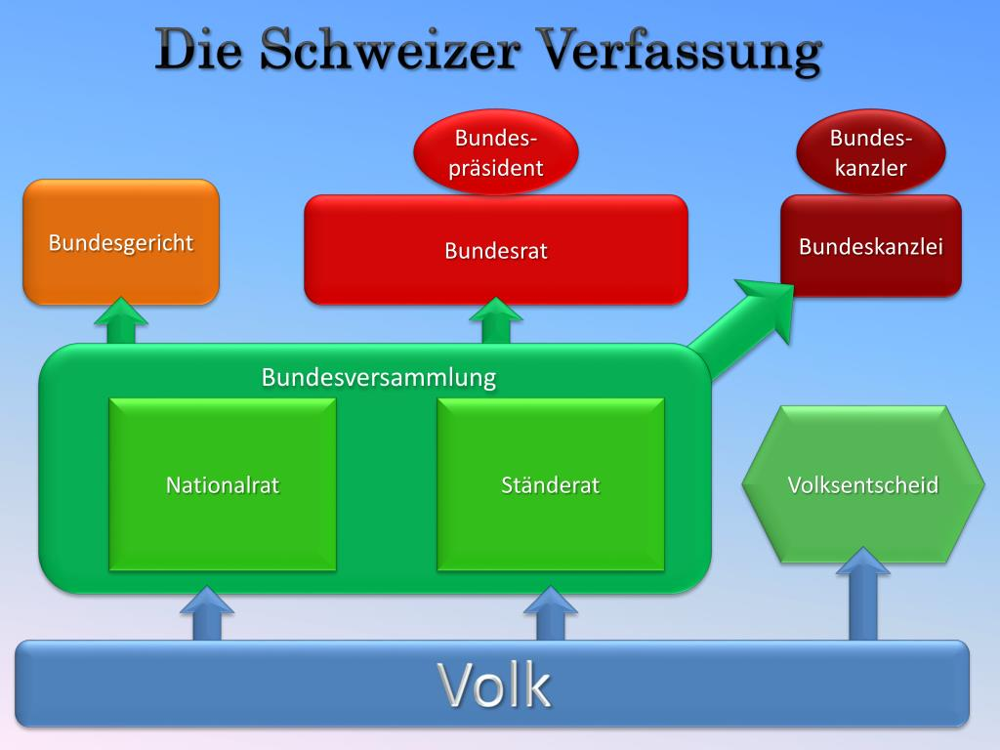

.jpg)
PHP

Diese Woche haben wir im Unterricht bei Reto das Thema PHP behandelt. PHP ist eine
Programmiersprache, die vor allem dafür benutzt wird, dynamische Webseiten zu erstellen. Mit PHP
kann man Webseiten so gestalten, dass die Nutzer interaktiv damit arbeiten können, Daten speichern
oder abrufen und viele Funktionen auf dem Server ausführen, die mit normalem HTML allein nicht
möglich sind. Ausserdem ist PHP sehr verbreitet und wird von vielen Webseiten genutzt. Es ist
eigentlich ziemlich easy zu lernen, sodass auch Anfänger schnell erste Ergebnisse erreichen können.
Was ist PHP?
PHP ist mit ca. 80 % die am weitesten verbreitete serverseitige Programmiersprache (Stand: Juni 2015). Serverseitig heisst das, dass die Sprache nur Aktionen auf dem Server durchführen kann: Sie kann zum Beispiel Verbindungen zu einer Datenbank aufbauen oder Dateien auf dem Server löschen. Du kannst eine HTML-Datei ganz einfach in PHP umwandeln. Du musst die HTML-Datei nur unter .php abspeichern. Du kannst diese PHP-Datei ohne PHP-Code auf deinen Server hochladen und aufrufen. Die Ausgabe ist dabei unverändert.
Dafür benutzt man PHP
PHP kann man super nutzen, um die Nutzereingaben zu verarbeiten. Wenn du zum Beispiel auf deiner Website ein Kontaktformular einbauen willst, müssen die Daten weiterverarbeitet werden. Nur mit HTML geht das nicht. Mit PHP kannst du zum Beispiel checken, ob alle Felder ausgefüllt wurden und im Erfolgsfall eine E-Mail verschicken. Wenn du Inhalte aus einer Datenbank abrufen willst, ist PHP eine gute Wahl. Wenn du zum Beispiel eine Nachrichten-Website programmieren willst, kannst du deine Texte in einer Datenbank speichern und diese dann mit PHP an den gewünschten Stellen in deinem HTML-Code ausgeben. Das heisst, du musst nicht für jeden Artikel eine einzelne HTML-Datei erstellen und kannst Änderungen viel schneller umsetzen.
Fazit
PHP ist eine verbreitete Programmiersprache, die man für Webseiten benutzt. Damit kann man Webseiten so gestalten, dass sie dynamisch und interaktiv sind. Man kann mit einfachen Mitteln, wie dem Umwandeln einer HTML-Datei in eine PHP-Datei, die Funktionen von PHP nutzen ohne den ursprünglichen Inhalt zu verändern. Obwohl ich einen Tag gefehlt habe, konnte ich den verpassten Stoff gut nachholen und verstehen. Die Arbeit mit PHP hat mir gut gefallen. Ich habe mehr Verständnis für serverseitige Programmierung. Das wird mir in zukünftigen Projekten helfen.
Weekly random Facts
Die Schweizer Politik
Die Schweiz ist eine direkte Demokratie. Die Bürgerinnen und Bürger können über viele Gesetze mitentscheiden. Der Staat ist in drei Bereiche aufgeteilt: Bund, Kantone und Gemeinden. Der Bund kümmert sich um Themen, die für unser Land wichtig sind. Zum Beispiel um die Armee, die Finanzen und die Aussenpolitik. Die Kantone sind für Schulen, Polizei und Spitäler zuständig. Die Gemeinden kümmern sich um Dinge wie Abfall, Wasser und Steuern.
Die politische Macht in der Schweiz ist auf drei Gewalten verteilt. Die Legislative macht die Gesetze, die Exekutive führt sie aus und die Judikative überprüft, ob sie richtig angewendet werden. Die Legislative auf Bundesebene besteht aus dem Parlament. Dieses setzt sich aus dem Nationalrat und dem Ständerat zusammen. Die Regierung von sieben Mitgliedern heisst Exekutive. Sie leitet verschiedene Bereiche. Die Judikative besteht aus dem Bundesgericht.
Ein Merkmal der Schweizer Politik ist die direkte Demokratie. Das Volk kann neue Gesetze vorschlagen. Dafür braucht es 100'000 Unterschriften in 18 Monaten. Ausserdem können Bürger mit einem Referendum verlangen, dass über ein neues Gesetz abgestimmt wird. Dafür sind 50'000 Unterschriften in 100 Tagen nötig. So hat das Volk viel Einfluss auf politische Entscheidungen.
Das Parlament der Schweiz besteht aus dem Nationalrat mit 200 Mitgliedern, die das Volk vertreten, und dem Ständerat mit 46 Mitgliedern, die die Kantone vertreten. Zusammen sind sie die Bundesversammlung. Sie beschliessen Gesetze und wählen den Bundesrat. Der Bundesrat hat sieben Mitglieder. Sie kommen aus verschiedenen Parteien und regieren gemeinsam. Der Bundespräsident oder die Bundespräsidentin wird jedes Jahr neu gewählt. Er oder sie hat aber nicht mehr Macht als die anderen Mitglieder.
In der Schweiz gibt es mehrere grosse Parteien. Dazu gehören die SVP, die SP, die FDP, die Mitte, die Grünen und die GLP. In der Politik versucht man, gemeinsam Lösungen zu finden, damit alle zufrieden sind. Die Schweizer Politik will in Frieden und Zusammenarbeit regieren, damit das Land stabil und gerecht bleibt.